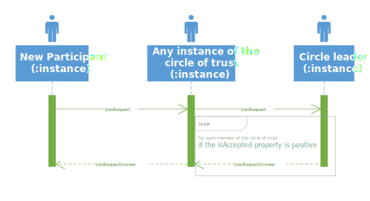
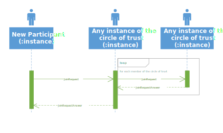
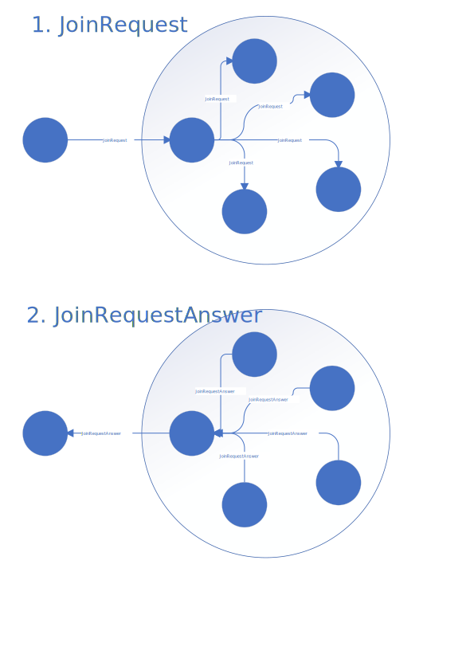
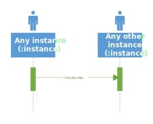
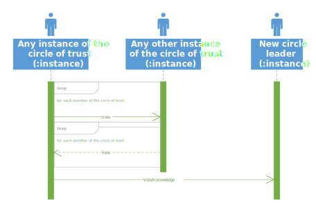
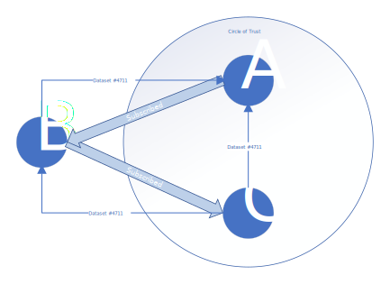

The OpenDataPub protocol is a decentralised networking protocol for open data platforms based upon the ActivityPub protcol in combination with the DCAT-AP open data standard of the EU.
This document is a proposed submission.
Datasets are a central component of any Open Data Platform. Datasets provide context to the actual data, which they carry as an Resource. (ActivityPub: Object)
Dataset objects MUST have the following properties:
Dataset
dct:title
This property contains a name given to the Dataset.
Range: dfs:Literal (1..n)
Dataset
dct:description
This property contains a free-text account of the Dataset.
Range: dfs:Literal (1..n)
Dataset
odp:id
This property contains an unique identifier across the whole web. This is an URL in combination with the dataset id.
Range: dfs:Literal (1..1)
Dataset
odp:activity
This property contains a numeric value, that shows wheter this is a creation, deletion or an update.
Range: xsd:nonNegativeInteger (1..1)
Dataset objects SHOULD have the following properties:
Dataset
dcat:keyword
This property contains a keyword or tag describing the Dataset.
Range: rdfs:Literal (0..n)
Dataset
dcat:contactPoint
This property contains contact information that can be used for sending comments about the Dataset.
Range: vcard:Kind (0..n)
Dataset
dcat:distribution
This property links the Dataset to an available Distribution.
Range: dcat:Distribution (0..n)
Dataset
dct:publisher
This property refers to an entity (organisation) responsible for making the Dataset available.
Range: foaf:Agent (0..1)
Dataset
dcat:theme
This property refers to a category of the Dataset. A Dataset may be associated with multiple themes.
Range: skos:Concept (0..n)
Dataset objects MAY have the following properties:
Dataset
dct:issued
This property contains the date of formal issuance (e.g., publication) of the Dataset.
Range: rdfs:Literal typed as xsd:date or xsd:dateTime (0..1)
Dataset
dct:modified
This property contains the most recent date on which the Dataset was changed or modified.
Range: rdfs:Literal typed as xsd:date or xsd:dateTime (0..1)
Dataset
dct:language
This property refers to a language of the Dataset.
Range: dct:LinguisticSystem (0..n)
Dataset
dct:accrualPeriodicity
This property refers to the frequency at which the Dataset is updated.
Range: dct:Frequency (0..1)
Dataset
dct:identifier
This property contains the main identifier for the Dataset, e.g. the URI or other unique identifier in the context of the Catalog.
Range: rdfs:Literal (0..n)
Dataset
dct:spatial
This property refers to a geographic region that is covered by the Dataset.
Range: dct:Location (0..n)
Dataset
dct:temporal
This property refers to a temporal period that the Dataset covers.
Range: dct:PeriodOfTime (0..n)
Dataset
dcat:landingPage
This property refers to a web page that provides access to the Dataset, its Distributions and/or additional information. It is intended to point to a landing page at the original data provider, not to a page on a site of a third party, such as an aggregator.
Range: foaf:Document (0..n)
Dataset
dct:accessRights
This property refers to information that indicates whether the Dataset is open data, has access restrictions or is not public. A controlled vocabulary with three members (:public, :restricted, :non-public) will be created and maintained by the Publications Office of the EU.
Range: dct:RightsStatement (0..1)
Dataset
dct:conformsTo
This property refers to an implementing rule or other specification.
Range: dct:Standard (0..n)
Dataset
foaf:page
This property refers to a page or document about this Dataset.
Range: foaf:Document (0..n)
Dataset
dct:isVersionOf
This property refers to a related Dataset of which the described Dataset is a version, edition, or adaptation.
Range: dcat:Dataset (0..n)
Dataset
adms:identifier
This property refers to a secondary identifier of the Dataset, such as MAST/ADS, DataCite, DOI, EZID or W3ID.
Range: adms:Identifier (0..n)
Dataset
dct:provenance
This property contains a statement about the lineage of a Dataset.
Range: dct:ProvenanceStatement (0..n)
Dataset
dct:relation
This property refers to a related resource.
Range: rdfs:Resource (0..n)
Dataset
adms:sample
This property refers to a sample distribution of the dataset.
Range: dcat:Distribution (0..n)
Dataset
dct:source
This property refers to a related Dataset from which the described Dataset is derived.
Range: dcat:Dataset (0..n)
Dataset
dct:type
This property refers to the type of the Dataset. A controlled vocabulary for the values has not been established.
Range: skos:Concept (0..1)
Dataset
owl:versionInfo
This property contains a version number or other version designation of the Dataset.
Range: rdfs:Literal (0..1)
Dataset
adms:versionNotes
This property contains a description of the differences between this version and a previous version of the Dataset.
Range: rdfs:Literal (0..n)
<dcat:Dataset rdf:about="https://www.govdata.de/web/guest/suchen/-/details/naturraume-geest-und-marsch3">
<!-- must -->
<dct:title xml:lang="de">Naturräume Geest und Marsch</dct:title>
<dct:description xml:lang="de">Die Zuordnung des Hamburger Stadtgebietes zu den Naturräumen Geest und Marsch wird dargestellt. Die Karte ist auch als Hilfskarte für den Kontext -Einbau Ersatzbaustoffe- zu verstehen. Hier gibt es unterschiedliche Richtlinien je nachdem, ob ein Bauvorhaben in bzw. auf Geest- oder Marsch-Boden geplant ist. Die Daten werden als WMS-Darstellungsdienst und als WFS-Downloaddienst bereitgestellt.</dct:description>
<odp:id>https://ckan.govdata.de/dataset/1a6c005a-75ba-4527-85eb-992dbd08b320</odp:id>
<!-- should -->
<dcat:keyword xml:lang="de">Bodenschutz</dcat:keyword>
<dcat:keyword xml:lang="de">Geodaten</dcat:keyword>
<dcat:keyword xml:lang="de">Grundwasser</dcat:keyword>
<dcat:keyword xml:lang="de">hmbtg</dcat:keyword>
<dcat:keyword xml:lang="de">hmbtg_09_geodaten</dcat:keyword>
<dcat:keyword xml:lang="de">Karte</dcat:keyword>
<dcat:keyword xml:lang="de">opendata</dcat:keyword>
<dcat:keyword xml:lang="de">Thematische Karte</dcat:keyword>
<dcat:keyword xml:lang="de">Umwelt und Klima</dcat:keyword>
<dcat:contactPoint>
<vcard:Individual>
<vcard:fn>Herr Dr. Michael Schröder</vcard:fn>
<vcard:hasEmail rdf:resource="mailto:michael.schroeder@bue.hamburg.de"/>
<vcard:hasTelephone rdf:parseType="Resource">
<vcard:hasValue rdf:resource="tel:+4940428403494"/>
<rdf:type rdf:resource="http://www.w3.org/2006/vcard/ns#Home"/>
<rdf:type rdf:resource="http://www.w3.org/2006/vcard/ns#Voice"/>
</vcard:hasTelephone>
</vcard:Individual>
</dcat:contactPoint>
<dcat:distribution rdf:resource="http://geodienste.hamburg.de/HH_WFS_Grundwasserschutz?SERVICE=WFS&VERSION=1.1.0&REQUEST=GetFeature&typename=BSU_Z_Grundwasserschutz:Geest-_Marsch"/>
<dcat:distribution rdf:resource="http://geodienste.hamburg.de/HH_WFS_Grundwasserschutz?REQUEST=GetCapabilities&SERVICE=WFS"/>
<dcat:distribution rdf:resource="http://geodienste.hamburg.de/HH_WMS_Grundwasserschutz?REQUEST=GetCapabilities&SERVICE=WMS"/>
<dcat:distribution rdf:resource="http://daten-hamburg.de/umwelt_klima/naturraeume_geest_und_marsch/Naturraeume_Geest_und_Marsch_HH_2017-02-20.zip"/>
<dcat:distribution rdf:resource="http://metaver.de/trefferanzeige?docuuid=4635D337-4805-4C32-A211-13F8C038BF27"/>
<dct:publisher>
<foaf:Agent rdf:about="http://www.hamburg.de/bue/">
<foaf:name>Behörde für Umwelt und Energie (BUE), Amt für Umweltschutz</foaf:name>
<dct:type rdf:resource="http://purl.org/adms/publishertype/LocalAuthority"/>
<odp:id>https://ckan.govdata.de/agent/N229dfea990bb44c8836accb82fd1047b</odp:id>
</foaf:Agent>
</dct:publisher>
<dcat:theme rdf:resource="http://publications.europa.eu/resource/authority/data-theme/ENVI"/>
<dcat:theme rdf:resource="http://publications.europa.eu/resource/authority/data-theme/AGRI"/>
<!-- may -->
<dct:issued rdf:datatype="http://www.w3.org/2001/XMLSchema#date">2017-02-27</dct:issued>
<dct:language rdf:resource="http://publications.europa.eu/resource/authority/language/DEU"/>
<dct:accrualPeriodicity rdf:resource="http://publications.europa.eu/resource/authority/frequency/ANNUAL"/>
<adms:identifier>4635D337-4805-4C32-A211-13F8C038BF27</adms:identifier>
<dct:spatial>
<gml:Envelope gml:srsName="http://www.opengis.net/def/crs/EPSG/0/4326">
<gml:lowerCorner>-10.58 34.56</gml:lowerCorner>
<gml:upperCorner>34.50 70.40</gml:upperCorner>
</gml:Envelope>
</dct:spatial>
<dct:spatial>
<dct:temporal>
<dct:PeriodOfTime>
<schema:startDate rdf:datatype="http://www.w3.org/2001/XMLSchema#date">2016-01-01</schema:startDate>
<schema:endDate rdf:datatype="http://www.w3.org/2001/XMLSchema#date">2016-12-31</schema:endDate>
</dct:PeriodOfTime>
</dct:temporal>
<dcat:landingPage rdf:resource="https://www.govdata.de/web/guest/daten/-/details/naturraume-geest-und-marsch3"/>
<dct:accessRights>public</dct:accessRights>
<dct:conformsTo rdf:resource="http://schemas.opengis.net/wfs/1.1.0/wfs.xsd"/>
<foaf:page rdf:resource="http://metaver.de/trefferanzeige?docuuid=4635D337-4805-4C32-A211-13F8C038BF27"/>
<dct:isVersionOf rdf:resource="https://www.govdata.de/web/guest/suchen/-/details/naturraume-geest-und-marsch2"/>
<adms:identifier>docID344</adms:identifier>
<dct:provenance>MDK/c71a34e1-bf96-44d8-8020-5ebb0c7012a3</dct:provenance>
<dct:relation rdf:resource="http://www.hamburg.de/grundwasser/;jsessionid=2955D422DF427EF0F3DBCA0E67239DC7.liveWorker2"/>
<adms:sample>Referenz auf Beispieldatenstruktur</adms:sample>
<dct:source rdf:resource="http://originalportal.de/source/"/>
<dct:type rdf:resource=""/> <!-- TODO -->
<owl:versionInfo>2.0</owl:versionInfo>
<adms:versionNotes>Teilweise geänderte Fassung</adms:versionNotes>
A Catalog is an object to group different datasets. (ActivityPub: Object)
Catalog objects MUST have the following properties:
Catalog
dct:title
This property contains a name given to the Catalog.
Range: dfs:Literal (1..n)
Catalog
dct:description
This property contains a free-text account of the Catalog.
Range: dfs:Literal (1..n)
Catalog
dct:publisher
This property refers to an entity (organisation) responsible for making the Catalog available.
Range: foaf:Agent (1..1)
Catalog
dct:dataset
This property links the Catalog with a Dataset that is part of the Catalog.
Range: dcat:Dataset (1..n)
Dataset objects SHOULD have the following properties:
Catalog
foaf:homepage
This property refers to a web page that acts as the main page for the Catalog.
Range: foaf:Document (0..1)
Catalog
dct:language
This property refers to a language used in the textual metadata describing titles, descriptions, etc. of the Datasets in the Catalog.
Range: dct:LinguisticSystem (0..n)
Catalog
dct:license
This property refers to the licence under which the Catalog can be used or reused.
Range: dct:LicenseDocument (0..1)
Catalog
dct:issued
This property contains the date of formal issuance (e.g., publication) of the Catalog.
Range: rdfs:Literal typed as xsd:date or xsd:dateTime (0..1)
Catalog
dcat:themeTaxonomy
This property refers to a knowledge organization system used to classify the Catalog's Datasets.
Range: skos:ConceptScheme (0..n)
Catalog
dct:modified
This property contains the most recent date on which the Catalog was modified.
Range: rdfs:Literal typed as xsd:date or xsd:dateTime (0..1)
Dataset objects MAY have the following properties:
Catalog
dct:hasPart
This property refers to a related Catalog that is part of the described Catalog
Range: dcat:Catalog (0..n)
Catalog
dct:isPartOf
This property refers to a related Catalog in which the described Catalog is physically or logically included.
Range: dcat:Catalog (0..1)
Catalog
dcat:record
This property refers to a Catalog Record that is part of the Catalog.
Range: dcat:CatalogRecord (0..n)
Catalog
dct:rights
This property refers to a statement that specifies rights associated with the Catalog.
Range: dct:RightsStatement (0..1)
Catalog
dct:spatial
This property refers to a geographical area covered by the Catalog.
Range: dct:Location (0..n)
<dcat:Catalog rdf:about="http://transparenz.hamburg.de/">
<!-- must -->
<dct:title xml:lang="de">Transparenzportal Hamburg</dct:title>
<dct:description xml:lang="de">Das Transparenzportal Hamburg ist das im Hamburgischen Transparenzgesetz (HmbTG) geforderte Informationsregister, über das alle per Gesetz veröffentlichungspflichtigen Informationen anonym recherchiert werden können. Es ist der zentrale Zugang zu aktuellen Daten und Informationen der Hamburger Verwaltung und stellt, um die leichte Auffindbarkeit der gesuchten Inhalte zu gewährleisten, eine Suche über den Volltext aller Datensätze bereit. Über den Suchschlitz kann nach Stichworten gesucht werden, es ist aber auch möglich, mit Hilfe der erweiterten Suche genaue Einschränkungen, z.B. nach Dateiformat, Kategorie oder Zeiträumen, vorzunehmen. Neben den veröffentlichungspflichtigen Inhalten können über das Transparenzportal Hamburg auch Informationen und Daten recherchiert werden, die freiwillig und zur Weiterverarbeitung zugänglich gemacht werden (siehe Open Data).</dct:description>
<dct:publisher>
<foaf:Agent rdf:about="http://www.hamburg.de/">
<foaf:name>http://www.hamburg.de/</foaf:name>
<odp:id>https://ckan.govdata.de/agent/N229dfaop44mamf6accb82fd2seya048a</odp:id>
<dct:type rdf:resource="http://purl.org/adms/publishertype/LocalAuthority"/>
</foaf:Agent>
</dct:publisher>
<dcat:dataset rdf:resource="https://www.govdata.de/web/guest/suchen/-/details/naturraume-geest-und-marsch3"/>
<!-- should -->
<foaf:homepage rdf:resource="http://transparenz.hamburg.de/"/>
<dct:language rdf:resource="http://publications.europa.eu/resource/authority/language/DEU"/>
<dct:language rdf:resource="http://publications.europa.eu/resource/authority/language/ENG"/>
<dct:license rdf:resource="http://dcat-ap.de/def/licenses/dl-by-de/2.0"/>
<dct:issued rdf:datatype="http://www.w3.org/2001/XMLSchema#date">2017-03-09</dct:issued>
<dcat:themeTaxonomy rdf:resource="http://publications.europa.eu/resource/authority/data-theme"/>
<dct:modified rdf:datatype="http://www.w3.org/2001/XMLSchema#date">2018-04-05</dct:modified>
<!-- may -->
<dct:hasPart rdf:resource="http://transparenz.hamburg.de/energie"/>
<dct:isPartOf rdf:resource="https://www.govdata.de"/>
<dcat:record rdf:resource="http://suche.transparenz.hamburg.de/dataset/naturraume-geest-und-marsch5"/>
<dct:rights rdf:resource="http://transparenz.hamburg.de/rightsstatement"/>
<dct:spatial>
<locn:Address>
<locn:fullAddress>Die Freie und Hansestadt Hamburg, Rathausmarkt 1, 20095 Hamburg </locn:fullAddress>
<locn:poBox>Postfach 1000</locn:poBox>
<locn:locatorDesignator>D</locn:locatorDesignator>
<locn:locatorName>Haus</locn:locatorName>
<locn:addressArea>Hamburg</locn:addressArea>
<locn:postName>Die Freie und Hansestadt Hamburg</locn:postName>
<locn:adminUnitL2 rdf:resource="http://dcat-ap.de/def/politicalGeocoding/stateKey/02"/>
<locn:adminUnitL1 rdf:resource="http://publications.europa.eu/resource/authority/atu/DEU"/>
<locn:postCode>20095</locn:postCode>
<locn:addressID>ID 97653</locn:addressID>
</locn:Address>
</dct:spatial>
</dcat:Catalog>
This class is optional and not all catalogs will use it. It exists for catalogs where a distinction is made between metadata about a dataset and metadata about the dataset's entry in the catalog. (ActivityPub: Object)
Catalog Record objects MUST have the following properties:
Catalog
foaf:primaryTopic
This property links the Catalogue Record to the Dataset described in the record.
Range: dcat:Dataset (1..1)
Catalog
date dct:modified
This property contains the most recent date on which the Catalog entry was changed or modified.
Range: rdfs:Literal typed as xsd:date or xsd:dateTime (1..1)
Catalog Record objects SHOULD have the following properties:
Catalog
dct:issued
This property contains the date on which the description of the Dataset was included in the Catalog.
Range: rdfs:Literal typed as xsd:date or xsd:dateTime (0..1)
Catalog
adms:status
It MUST take one of the values :created, :updated or :deleted depending on whether this latest revision is a result of a creation, update or deletion.
Range: skos:Concept (0..1)
Catalog
dct:conformsTo
This property refers to an Application Profile that the Dataset’s metadata conforms to 0..1 change type adms:status skos:Concept This property refers to the type of the latest revision of a Dataset's entry in the Catalog.
Range: rdfs:Resource (0..1)
Catalog Record objects MAY have the following properties:
Catalog
dct:title
This property contains a name given to the Catalogue Record.
Range: rdfs:Literal (0..n)
Catalog
dct:description
This property contains a free-text account of the record.
Range: rdfs:Literal (0..n)
Catalog
dct:language
This property refers to a language used in the textual metadata describing titles, descriptions, etc. of the Dataset.
Range: dct:LinguisticSystem (0..n)
Catalog
dct:source
This property refers to the original metadata that was used in creating metadata for the Dataset.
Range: dcat:CatalogRecord (0..1)
<dcat:CatalogRecord rdf:about="http://suche.transparenz.hamburg.de/dataset/naturraume-geest-und-marsch5">
<!-- must -->
<foaf:primaryTopic rdf:resource="https://www.govdata.de/web/guest/suchen/-/details/naturraume-geest-und-marsch3"/>
<dct:modified rdf:datatype="http://www.w3.org/2001/XMLSchema#dateTime">2017-03-10T10:00:00</dct:modified>
<!-- should -->
<dct:issued rdf:datatype="http://www.w3.org/2001/XMLSchema#date">2017-03-09</dct:issued>
<adms:status rdf:resource="http://purl.org/adms/status/Completed"/>
<dct:conformsTo rdf:resource="http://www.Referenz-auf-ein-Application-Profile.de"/>
<!-- may -->
<dct:title xml:lang="de">Naturräume Geest und Marsch</dct:title>
<dct:description xml:lang="de">Die Zuordnung des Hamburger Stadtgebietes zu den Naturräumen Geest und Marsch wird dargestellt.</dct:description>
<dct:language rdf:resource="http://publications.europa.eu/resource/authority/language/DEU"/>
<dct:source rdf:resource="http://suche.transparenz.hamburg.de/dataset/naturraume-geest-und-marsch5"/>
</dcat:CatalogRecord>
Represents a specific available form of a dataset. Each dataset might be available in different forms, these forms might represent different formats of the dataset or different endpoints. Examples of distributions include a downloadable CSV file, an API or an RSS feed. (ActivityPub: )
Distribution objects MUST have the following properties:
Distribution
dcat:accessURL
This property contains a URL that gives access to a Distribution of the Dataset. The resource at the access URL may contain information about how to get the Dataset.
Range: rdfs:Resource (1..n)
Distribution objects SHOULD have the following properties:
Distribution
dct:description
This property contains a free-text account of the Distribution.
Range: rdfs:Literal (0..n)
Distribution
dct:format
This property refers to the file format of the Distribution.
Range: dct:MediaTypeOrExtent (0..1)
Distribution
dct:license
This property refers to the licence under which the Distribution is made available.
Range: dct:LicenseDocument (0..1)
Distribution objects MAY have the following properties:
Distribution
dcat:byteSize
This property contains the size of a Distribution in bytes.
Range: rdfs:Literal typed as xsd:decimal (0..1)
Distribution
spdx:checksum
This property provides a mechanism that can be used to verify that the contents of a distribution have not changed
Range: spdx:Checksum (0..1)
Distribution
foaf:page
This property refers to a page or document about this Distribution.
Range: foaf:Document (0..n)
Distribution
dcat:downloadURL
This property contains a URL that is a direct link to a downloadable file in a given format.
Range: downloadURL rdfs:Resource (0..n)
Distribution
dct:language
This property refers to a language used in the Distribution.
Range: dct:LinguisticSystem (0..n)
Distribution
dct:conformsTo
This property refers to an established schema to which the described Distribution conforms.
Range: dct:Standard (0..n)
Distribution
dcat:mediaType, subproperty of dct:format
This property refers to the media type of the Distribution as defined in the official register of media types managed by IANA.
Range: dct:MediaTypeOrExtent (0..1)
Distribution
dct:issued
This property contains the date of formal issuance (e.g., publication) of the Distribution.
Range: rdfs:Literal typed as xsd:date or xsd:dateTime (0..1)
Distribution
dct:rights
This property refers to a statement that specifies rights associated with the Distribution.
Range: dct:RightsStatement (0..1)
Distribution
adms:status
This property refers to the maturity of the Distribution
Range: skos:Concept (0..1)
Distribution
dct:title
This property contains a name given to the Distribution.
Range: rdfs:Literal (0..n)
Distribution
dct:modified
This property contains the most recent date on which the Distribution was changed or modified.
Range: rdfs:Literal typed as xsd:date or xsd:dateTime (0..1)
<dcat:Distribution rdf:about="http://geodienste.hamburg.de/HH_WFS_Grundwasserschutz?SERVICE=WFS&VERSION=1.1.0&REQUEST=GetFeature&typename=BSU_Z_Grundwasserschutz:Geest-_Marsch">
<!-- must -->
<dcat:accessURL rdf:resource="http://geodienste.hamburg.de/HH_WFS_Grundwasserschutz?SERVICE=WFS&VERSION=1.1.0&REQUEST=GetFeature&typename=BSU_Z_Grundwasserschutz:Geest-_Marsch"/>
<!-- should -->
<dct:description xml:lang="de">Das ist eine deutsche Beschreibung der Distribution 1</dct:description>
<dct:format>csv</dct:format>
<dct:license rdf:resource="http://dcat-ap.de/def/licenses/dl-by-de/2.0"/>
<!-- may -->
<dcat:byteSize rdf:datatype="http://www.w3.org/2001/XMLSchema#decimal">685246000</dcat:byteSize>
<checksum xmlns="http://spdx.org/rdf/terms#" rdf:nodeID="node1c7ra5t0ax2"/>
<foaf:page rdf:resource="https://www.govdata.de/ckan/api/rest/dataset/naturraume-geest-und-marsch3"/>
<dcat:downloadURL rdf:resource="http://geodienste.hamburg.de/HH_WFS_Grundwasserschutz?SERVICE=WFS&VERSION=1.1.0&REQUEST=GetFeature&typename=BSU_Z_Grundwasserschutz:Geest-_Marsch"/>
<dct:language rdf:resource="http://publications.europa.eu/resource/authority/language/DEU"/>
<dct:conformsTo rdf:resource="http://schemas.opengis.net/wfs/1.1.0/wfs.xsd"/>
<dcat:mediaType rdf:resource="https://www.iana.org/assignments/media-types/application/gml+xml"/>
<dct:issued rdf:datatype="http://www.w3.org/2001/XMLSchema#date">2017-02-27</dct:issued>
<dct:rights rdf:nodeID="node1c7ra5t0ax1"/>
<adms:status rdf:resource="http://purl.org/adms/status/Completed"/>
<dct:title xml:lang="de">Download WFS Naturräume Geest und Marsch (GML)</dct:title>
<dct:modified rdf:datatype="http://www.w3.org/2001/XMLSchema#dateTime">2017-03-07T10:00:00</dct:modified>
</dcat:Distribution>
<odrs:RightsStatement rdf:nodeID="node1c7ra5t0ax1">
<odrs:attributionText xml:lang="de">Freie und Hansestadt Hamburg, Behörde für Umwelt und Energie, 2015</odrs:attributionText>
<odrs:attributionText xml:lang="en">Free and Hanseatic City of Hamburg, Department of Environment and Energy, 2015</odrs:attributionText>
<odrs:copyrightYear>2015</odrs:copyrightYear>
</odrs:RightsStatement>
This class describes an Agent that publishes Data. It MAY have all fields provided by the foaf:Person and foaf:Organization Vocabulary Specification. (ActivityPub: )
Agent objects MUST have the following properties:
Agent
foaf:name
This property contains a name of the agent. This property can be repeated for different versions of the name (e.g. the name in different languages)
Range: rdfs:Literal (1..n)
Dataset
odp:id
This property contains an unique identifier across the whole web. This is an URL in combination with the actor id.
Range: dfs:Literal (1..1)
Agent objects SHOULD have the following properties:
Agent
dct:type
This property refers to a type of the agent that makes the Catalogue or Dataset available.
Range: skos:Concept (0..1)
<foaf:Agent rdf:about="http://www.hamburg.de/bue/">
<!-- must -->
<foaf:name>Behörde für Umwelt und Energie (BUE), Amt für Umweltschutz</foaf:name>
<odp:id>https://ckan.govdata.de/agent/N229dfea990bb44c8836accb82fd1047b</odp:id>
<!-- should -->
<dct:type rdf:resource="http://purl.org/adms/publishertype/LocalAuthority"/>
</foaf:Agent>
The knowledge organization system (KOS) used to represent themes/categories of datasets in the catalog. It MAY have all fields provided by the skos:ConceptScheme Vocabulary Specification. The Category Scheme is being used in the Catalog Themes and Dataset Theme. (ActivityPub: )
Category Scheme objects MUST have the following properties:
Category Scheme
dct:title and [[Vocab-DCAT]] Concept scheme
This property contains a name of the category scheme. May be repeated for different versions of the name
Range: rdfs:Literal (1..n)
<rdf:RDF xmlns:rdf="http://www.w3.org/1999/02/22-rdf-syntax-ns#"
xmlns:rdfs="http://www.w3.org/2000/01/rdf-schema#"
xmlns:owl="http://www.w3.org/2002/07/owl#"
xmlns:skos="http://www.w3.org/2004/02/skos/core#"
xmlns:ns4="http://purl.org/dc/terms/"
xmlns:ns5="http://www.w3.org/2008/05/skos-xl#"
xmlns:ns6="http://publications.europa.eu/ontology/authority/">
<dct:title>Use Context</dct:title>
<rdf:Description rdf:about="http://publications.europa.eu/resource/authority/use-context">
<rdf:type rdf:resource="http://www.w3.org/2002/07/owl#Ontology" />
<rdf:type rdf:resource="http://www.w3.org/2004/02/skos/core#ConceptScheme" />
<rdfs:label xml:lang="en">Use context</rdfs:label>
<owl:imports rdf:resource="http://publications.europa.eu/ontology/euvoc" />
<rdfs:comment rdf:datatype="http://www.w3.org/2000/01/rdf-schema#Literal">Use context</rdfs:comment>
<skos:prefLabel xml:lang="en">Use context</skos:prefLabel>
</rdf:Description>
<rdf:Description rdf:about="http://publications.europa.eu/resource/authority/use-context/DCAT_AP">
<skos:inScheme rdf:resource="http://publications.europa.eu/resource/authority/use-context" />
<skos:topConceptOf rdf:resource="http://publications.europa.eu/resource/authority/use-context" />
</rdf:Description>
</rdf:RDF>
A category or a theme used to describe datasets in the catalog. It is recommended to use either skos:inScheme or skos:topConceptOf on every skos:Concept used to classify datasets to link it to the concept scheme it belongs to. This concept scheme is typically associated with the catalog using dcat:themeTaxonomy. It MAY have all fields provided by the skos:ConceptScheme Vocabulary Specification. The Category is being used in the Catalog Themes and Dataset Theme. (ActivityPub: )
Category objects MUST have the following properties:
Category Scheme
skos:prefLabel and [[Vocab-DCAT]] Concept
This property contains a preferred label of the category. This property can be repeated for parallel language versions of the label.
Range: rdfs:Literal (1..n)
<rdf:RDF>
<rdf:Description rdf:about="http://publications.europa.eu/resource/authority/data-theme/ENVI">
<skos:inScheme rdf:resource="http://publications.europa.eu/resource/authority/data-theme"/>
<skos:prefLabel xml:lang="en">Environment</skos:prefLabel>
<skos:prefLabel xml:lang="ro">Mediu</skos:prefLabel>
<skos:prefLabel xml:lang="hr">Okoliš</skos:prefLabel>
<skos:prefLabel xml:lang="et">Keskkond</skos:prefLabel>
<skos:prefLabel xml:lang="fi">Ympäristö</skos:prefLabel>
<skos:prefLabel xml:lang="es">Medio ambiente</skos:prefLabel>
<skos:prefLabel xml:lang="lv">Vide</skos:prefLabel>
<skos:prefLabel xml:lang="sl">Okolje</skos:prefLabel>
<skos:prefLabel xml:lang="fr">Environnement</skos:prefLabel>
<skos:prefLabel xml:lang="sv">Miljö</skos:prefLabel>
<skos:prefLabel xml:lang="pl">Środowisko</skos:prefLabel>
<skos:prefLabel xml:lang="nl">Milieu</skos:prefLabel>
<skos:prefLabel xml:lang="no">Miljø</skos:prefLabel>
<skos:prefLabel xml:lang="ga">Comhshaol</skos:prefLabel>
<skos:prefLabel xml:lang="sk">Životné prostredie</skos:prefLabel>
<skos:prefLabel xml:lang="hu">Környezet</skos:prefLabel>
<skos:prefLabel xml:lang="cs">Životní prostředí</skos:prefLabel>
<skos:prefLabel xml:lang="pt">Ambiente</skos:prefLabel>
<skos:prefLabel xml:lang="bg">Околна среда</skos:prefLabel>
<skos:prefLabel xml:lang="el">Περιβάλλον</skos:prefLabel>
<skos:prefLabel xml:lang="da">Miljø</skos:prefLabel>
<skos:prefLabel xml:lang="it">Ambiente</skos:prefLabel>
<skos:prefLabel xml:lang="de">Umwelt</skos:prefLabel>
<skos:prefLabel xml:lang="lt">Aplinka</skos:prefLabel>
<skos:prefLabel xml:lang="mt">Ambjent</skos:prefLabel>
</rdf:Description>
</rdf:RDF>
A Checksum is value that allows the contents of a file to be authenticated. Even small changes to the content of the file will change its checksum. This class allows the results of a variety of checksum and cryptographic message digest algorithms to be represented. It MAY have all fields provided by the spdx:Checksum Vocabulary Specification. (ActivityPub: )
Checksum objects MUST have the following properties:
Checksum
spdx:algorithm
This property identifies the algorithm used to produce the subject Checksum. Currently, SHA-1 is the only supported algorithm. It is anticipated that other algorithms will be supported at a later time.
Range: spdx:checksumAlgorithm_sha1 (1..1)
Checksum
spdx:checksumValue
This property provides a lower case hexadecimal encoded digest value produced using a specific algorithm.
Range: rdfs:Literal typed as xsd:hexBinary (1..1)
<Checksum xmlns="http://spdx.org/rdf/terms#" rdf:nodeID="node1c7ra5t0ax2">
<!-- must -->
<checksumValue xmlns="http://spdx.org/rdf/terms#">5bcc814127be171c75595d419f371c74c9cf041</checksumValue>
<algorithm xmlns="http://spdx.org/rdf/terms#" rdf:resource="http://dcat-ap.de/def/hashAlgorithms/sha/1"/>
</Checksum>
This is based on the [[UN-CEFACT-V3-1]] Identifier class. The type of the class is the adms:identifier. (ActivityPub: )
Identifier objects MUST have the following properties:
Identifier
skos:notation
This property contains a string that is an identifier in the context of the identifier scheme referenced by its datatype.
Range: rdfs:Literal typed with the URI of one of the members of the DataCite Resource Identifier Scheme (0..1)
<adms:identifier>
<!-- must -->
<skos:notation>4635D337-4805-4C32-A211-13F8C038BF27</skos:notation>
</adms:identifier>
A legal document giving official permission to do something with a Resource. It MAY have all fields provided by the dct:LicenseDocument Dublin Core Metadata Initiative. (ActivityPub: )
Identifier objects SHOULD have the following properties:
Licence
dct:type
This property refers to a type of licence, e.g. indicating ‘public domain’ or ‘royalties required’.
Range: skos:Concept (0..n)
<dct:LicenseDocument>
<!-- should -->
<dct:type>public domain</type>
</dct:LicenseDocument>
The Period of Time is a range of dates. It MAY have all fields provided by the dct:PeriodOfTime Dublin Core Metadata Initiative. (ActivityPub: )
Identifier objects MAY have the following properties:
PeriodOfTime
schema:startDate
This property contains the start of the period.
Range: rdfs:Literal typed as xsd:date or xsd:dateTime (0..1)
PeriodOfTime
schema:endDate
This property contains the end of the period.
Range: rdfs:Literal typed as xsd:date or xsd:dateTime (0..1)
<dct:PeriodOfTime>
<!-- may -->
<schema:startDate rdf:datatype="http://www.w3.org/2001/XMLSchema#date">2000-01-01</schema:startDate>
<schema:endDate rdf:datatype="http://www.w3.org/2001/XMLSchema#date">9999-12-31</schema:endDate>
</dct:PeriodOfTime>
The Instance is a description of a server in the OpenDataPub network.
Instance objects MUST have the following properties:
Instance
odp:identifier
This contains the URL to the instance, which is the unique identifer.
Range: rdfs:Literal (1..1)
Instance objects SHOULD have the following properties:
Instance
odp:endpoint
This property contains URL to the OpenDataPub API endpoint. It has to be supplied if the endpoint URL varies from the default URL.
Range: rdfs:Literal (0..1)
<odp:instance>
<!-- must -->
<odp:identifier>http://www.govdata.de</odp:identifier>
<!-- should -->
<odp:endpoint>http://www.govdata.de/odp/api/</odp:endpoint>
</odp:instance>
The outbox is discovered through the outbox
property of a server's info endpoint.
The outbox MUST be an
OrderedCollection.
The outbox stream contains datasets the server has published, subject to the ability of the requestor to retrieve the datasets.
The outbox accepts HTTP POST requests, with behaviour described in communication Interactions.
The inbox is discovered through the inbox
property of a server's info endpoint.
The inbox MUST be an
OrderedCollection.
The inbox stream contains all datasets received by the server.
The server MUST perform de-duplication of datasets returned by
the inbox. Duplication can occur if an dataset is published by a member of the circle of trust and by a server the server is subscribed to.
Such deduplication MUST be performed by comparing the
id of the activities and dropping any activities
already seen.
The inboxes of actors on federated servers accepts HTTP POST requests, with behaviour described in Delivery.
Every server MUST have a circle of trust collection. This is a list of every server who this server trusts to accept datasets from. The circle of trust collection MUST be an CircleOfTrustCollection.
The CircleOfTrustCollection is a collection of Circle of Trust Entries.
CircleOfTrustCollection objects MUST have the following properties:
CircleOfTrustCollection
odp:members
This contains a list of members of the circle of trust. There must be at least one entry, which would be the server itself.
Range: odp:Instance (1..n)
CircleOfTrustCollection objects MAY have the following properties:
CircleOfTrustCollection
odp:circleleader
This contains a single member of the circle of trust that is the circle leader. If there is no circle leader this property is empty and can be omitted.
Range: odp:Instance (0..1)
<odp:CircleOfTrustCollection>
<!-- must -->
<odp:members>
<odp:instance>
<odp:identifier>http://www.govdata.de</odp:identifier>
<odp:endpoint>http://www.govdata.de/odp/api/</odp:endpoint>
</odp:instance>
</odp:members>
<!-- may -->
<odp:circleleader>
<odp:identifier>http://www.govdata.de</odp:identifier>
<odp:endpoint>http://www.govdata.de/odp/api/</odp:endpoint>
</odp:circleleader>
</odp:CircleOfTrustCollection>
Every server MUST have a subscription collection. This is a list of every server who has subscribed to the datasets of a server. The subscription collection MUST be an SubscriptionCollection.
The SubscriptionCollection is a collection of instances.
SubscriptionCollection objects MAY have the following properties:
SubscriptionCollection
odp:members
This contains all members that are subscribed to datasets of this server.
Range: odp:Instance (0..n)
<odp:SubscriptionCollection>
<!-- may -->
<odp:members>
<odp:instance>
<odp:identifier>http://www.govdata.de</odp:identifier>
<odp:endpoint>http://www.govdata.de/odp/api/</odp:endpoint>
</odp:instance>
</odp:members>
</odp:SubscriptionCollection>
In contrast to [[ActivityPub]] OpenDataPub uses a server-to-server only approach. Whereas [[ActivityPub]] has actor inboxes, these structures are server inboxes in Open DataDataPub.
Servers communicate with other servers and propagate information across the open data network by posting datasets to server inbox endpoints. The server inbox endpoints are determinded by a circle of trust list. The dataset is the central class, to which all other classes relate, therefore only the datasets MUST be propagated across the network.
In order to propagate updates throughout the open data network, datasets are sent to all recipients in a server's circle of trust and subscription collection. The circle of trust is a closed circle in which each member trust the datasets from all other members. The servers MUST therefore store the datasets, so they can be found. In contrast to the circle of trust, the SubscribtionCollection is a more loose association. Server B can request to be added to server A's SubscribtionCollection and will then be delivered with the updates regarding all datasets. However, a subscriber in the SubscribtionCollection, like server B, is not trusted to produce legitimate datasets and is therefore not allowed to write back in A's inbox. The result is a one-way delivery of datasets.
Delivery is usually triggered by, for example:Every instance has five endpoints that are needed for the communication. The Endpoint SHOULD be reachable by a central URL like "[baseURL]/api/", but MAY be located anywhere else.
The info endpoint MUST output the Instance datatype filled with the information about the instance. With this information the endpoints can be queried and supply additional information in case of an extension.
The info endpoint is central, because all other endpoints are located nested under his URL. It therefore definies the [endpoint] variable used in this chapter.
The outbox is discovered through the info endpoint of an instance. It therefore MUST be located under the URL "[endpoint]/outbox/". The outbox MUST be an OrderedCollection.
The outbox MAY contain other objects than datasets, but will only deliver them based on the criteria defined in Communication.
When the contents of the outbox are up to delivery, the instance MUST determine the recipients of the objects.
Datasets MUST be delivered to all instance in the CircleOfTrustCollection as well as the instances in the SubscriptionCollection.
The instance MUST send them via POST to the inboxes of the instances, which can be derived from their Info endpoints.
The inbox is discovered through the info endpoint of an instance. It therefore MUST be located under the URL "[endpoint]/inbox/". The inbox MUST be an OrderedCollection of datasets.
It MUST accept POST request with datasets as a payload. This way datasets can be transfered from one instance to another. It MUST also de-duplicate datasets and deny any non-member of its circles of trust to write into its inbox. If that happens it SHOULD repond with a HTTP Status 405 Method Not Allowed upon receipt of a POST request.
The CircleOfTrust is discovered through the info endpoint of an instance. It therefore MUST be located under the URL "[endpoint]/CircleOfTrust/". The circle of trust endpoint MUST output the CircleOfTrustCollection of this instance. The Circle of Trust is supposed to be public, so instances can discover other instances.
The circle of trust understands three messages. There is a JoinRequest, JoinRequestAnswer und a Leave message.
For the circle of trust there are two options under which one can operate. The first being a circle of trust, that has a circle leader. This circle leader can decide whether to accept a join request or to deny it on its own without having to ask any other member.
In this scenario the new participant, who wants to join the circle sends a Join request to any member of the circle.
<odp:JoinRequest>
<!-- must -->
<odp:instance>
<odp:identifier>http://www.newinstance.example.com</odp:identifier>
<odp:endpoint>http://www.newinstance.example.com/odp/api/</odp:endpoint>
</odp:instance>
<odp:timeout>P1DT2H</opd:timeout>
</odp:JoinRequest>
This exact request MUST then send by the instance already in the circle to the CircleOfTrust endpoint of the circle leader. The circle leader can identify this as a new Request by comparing his CircleOfTrustCollection to the request. After deciding on whether to accept or deny the quest the circle leader sends its response, within the time limit set by the sender of the request. If the time of the timeout has run out, the circle leader MUST send a response with a negative isAccepted property and thereby denying the access to the circle of trust.
<odp:JoinRequestAnswer>
<!-- must -->
<odp:JoinRequest></odp:JoinRequest>
<odp:instance>
<odp:identifier>http://www.newinstance.example.com</odp:identifier>
<odp:endpoint>http://www.newinstance.example.com/odp/api/</odp:endpoint>
</odp:instance>
</odp:JoinRequest>
<odp:isAccepted>true</odp:isAccepted>
</odp:JoinRequestAnswer>
The outcome of the decision is then reflected in the odp:isAccepted property. If the instance is being denied access to the circle, the process is finished. If it accepted, the instance will be added to the CircleOfTrustCollection of the circle leader. The information is then spread across the cirlce of trust by send the JoinRequestAnswer to every instance of the circle of trust. If the answer was positive the other instances MUST add the newly accepted instance to their CircleOfTrustCollection.
If there is no circle leader, the request has a longer way to g before it can be definitly answered.
The JoinRequest is identical, but when the instance in the circle accepts the request from the new participant the instance, which is already a member, takes over the role of the circle leader for this process. But instead of deciding on the outcome itself, the instance MUST forward the request to every other instance in the circle. The instances now MUST reply wihtin the set timeout. When there is no decision being made within the timeout, the instance MUST send a response with a negative isAccepted property. The instance which acts as the circle leader MUST collect the JoinRequestAnswer message until all messages arrive. The vote is then evaluated by the instance and the answer, in form of a JoinRequestAnswer, MUST then be send to the new participant. If the instance acting as a circle leader is the only instance in the circle, it can answer the request on its own.
The Subscription is discovered through the info endpoint of an instance. It therefore MUST be located under the URL "[endpoint]/Subscription/". The Subscription endpoint MUST output the SubscriptionCollection of this instance. Subscribers are public and help with discoverability of the open data network.
<odp:SubscriptionCollection>
<!-- may -->
<odp:members>
<odp:instance>
<odp:identifier>http://www.govdata.de</odp:identifier>
<odp:endpoint>http://www.govdata.de/odp/api/</odp:endpoint>
</odp:instance>
</odp:members>
</odp:JoinRequestAnswer>
To get the updates of an instance any instance can send a Subscribe message.
<odp:Subscribe>
<!-- must -->
<odp:instance>
<odp:identifier>http://www.newinstance.example.com</odp:identifier>
<odp:endpoint>http://www.newinstance.example.com/odp/api/</odp:endpoint>
</odp:instance>
</odp:Subscribe>
If the message is answered with a HTTP 200 the instance MUST add the requesting instance to its SubscriptionCollection. If the instance denies the addition to the SubscriptionCollection it SHOULD answer with the appropiated error code, i.e. HTTP 409, if the instance is already on the list, or HTTP 429, if the instance is spamming.
After being added to the SubscriptionCollection of an instance, this instance will send every new dataset to the registered instance.
If the instance no longer wants to receive any updates, it can send the Unsubscribe message to remove itself from the SubscriptionCollection.
<odp:Unsubscribe>
<!-- must -->
<odp:instance>
<odp:identifier>http://www.newinstance.example.com</odp:identifier>
<odp:endpoint>http://www.newinstance.example.com/odp/api/</odp:endpoint>
</odp:instance>
</odp:Unsubscribe>
To verify that only the instance can unsubscribe itself, the instance MUST verify that the request is coming from that instance.
If the message is answered with a HTTP 200 the instance MUST be removed from the SubscriptionCollection.
In order to choose a circle leader in a circle of trust that has no leader so far, OpenDataPub needs a robust voting system. To avoid re-inventing the wheel a method similar to the VoxPopuli protocol is chosen for the protocol.
When an instance wants to vote on a new circle leader, it sends the Vote message. The vote can be either held for a new circle leader or for the removal of an instance from the circle of trust. This is determined by the voteOutcome property. The Vote message contains the instance attribute for the node, which the instance wants to be the next circle leader and a unique voteId as well as a timeout. The message is being sent to all other instances in the circle. Upon receiving the message every instance has the time definiend in the timeout to send out its own Vote message to every other node, reference the id from the original message.
<odp:Vote>
<!-- must -->
<odp:voteId>http://www.instance.example.com/41234</odp:voteId>
<odp:timeout>P1DT2H</odp:timeout>
<odp:instance>
<odp:identifier>http://www.newleader.opendatapub.eu</odp:identifier>
<odp:endpoint>http://www.newleader.opendatapub.eu/odp/api/</odp:endpoint>
</odp:instance>
<!-- may -->
<odp:previousId></odp:previousId>
</odp:Vote>
When 100% of the votes are in, the instances send a VoteAcknowledge message to the new circle leader. The decisive property MUST reflect wheter it was a win or a tie. The circle leader responds with a HTTP Status 200 if it came to the same conclusion as the instances, or a HTTP Status 403 if it didn't.
<odp:VoteAcknowledge>
<!-- must -->
<odp:instance>
<odp:identifier>http://www.newleader.opendatapub.eu</odp:identifier>
<odp:endpoint>http://www.newleader.opendatapub.eu/odp/api/</odp:endpoint>
</odp:instance>
<odp:decisive>true</odp:decisive>
</odp:VoteAcknowledge>
Either way the vote in this case is over and the instances would have to start a new vote. In the case of a timeout with less than 100% of the votes, the vote is canceled as well. In the case of a tie, the voting process has to be repeated, but only the two instances from the tie are eligible to be voted for. The instances have to be able to identify, that a vote is a successor to a previous failed vote, which is why in such a case the instances MUST fill the previousId field of the vote for reference.
Since the dataset is the central exchange datatype, there needs to be a way to change a once created dataset. OpenDatapub accomplishes that by using dataset activities. The activity fields take the value of either 01, for creation, 02, for an update or 03 for deletion. In case of an creating the initial dataset is delivered with all avaible fields. A dataset with a update activity 02 MUST only contain the changed fields and not the data that remained the same. This way the traffic is reduced and updates are easily identifiable. For a deletion only the dataset id and the activity SHOULD be provided.
The message has a set of properties, which include:
instance |
timeout
The message has a set of properties, which include:
instance |
timeout |
isAccepted
The message has a set of properties, which include:
instance
The message has a set of properties, which include:
instance
The message has a set of properties, which include:
voteid |
instance |
timeout |
previousId |
voteOutcome |
The previousId property is optional and should be filled if there is a previous vote.
The message has a set of properties, which include:
instance |
decisive |
This section describes OpenDataPub specific data types. There is no particular order to the list.
| Term | Description | Example | |
|---|---|---|---|
| voteId | URI: | @odp:voteId |
|
| Notes: | Provides the globally unique identifier for a vote. | ||
| Domain: | Vote |
||
| Range: | anyURI |
||
| Functional: | True | ||
| previousId | URI: | @odp:previousId |
|
| Notes: | Provides the globally unique identifier for the previous vote. | ||
| Domain: | Vote |
||
| Range: | anyURI |
||
| Functional: | True | ||
| voteOutcome | URI: | @odp:voteOutcome |
|
| Notes: | Provides the switch to indicate for what outcome is vote is held for. | ||
| Domain: | Vote |
||
| Range: |
xsd:nonNegativeInteger
0 - circle leader 1 - instance removal |
||
| Functional: | True | ||
| decisive | URI: | @odp:decisive |
|
| Notes: | Provides an indicator to show wheter the vote result was a win or a tie. | ||
| Domain: | VoteAcknowledge |
||
| Range: | xsd:boolean |
||
| Functional: | True | ||
| timeout | URI: | @odp:timeout |
|
| Notes: |
Provides a timeout as a xsd:duration.
|
||
| Domain: | Vote | JoinRequest |
||
| Range: | xsd:duration |
||
| Functional: | True | ||
| isAccepted | URI: | @odp:isAccepted |
|
| Notes: | Provides a answer to the question wheter a JoinRequest is accepted. | ||
| Domain: | JoinRequestAnswer |
||
| Range: | xsd:boolean |
||
| Functional: | True | ||
| activity | URI: | @odp:activity |
|
| Notes: | Provides an indicator, wheter this is a dataset creation, deletion or an update. See chapter Dataset activities. | ||
| Domain: | Dataset |
||
| Range: |
xsd:nonNegativeInteger
01 - creation 02 - update 03 - deletion |
||
| Functional: | True | ||
The following cahpters are heavily influenced by [[ActivityPub]], if not adopted completely.
Instances should set a limit on how deep to recurse while resolving objects, or otherwise specially handle OpenDataPub objects with recursive references. Failure to properly do so may result in denial-of-service security vulnerabilities.
Spam is a problem in any network, perhaps especially so in federated networks. While no specific mechanism for combating spam is provided in OpenDataPub, it is recommended that servers filter incoming content both by local untrusted users and any remote users through some sort of spam filter.
Instances should implement protections against denial-of-service attacks from other, federated instances. This can be done using, for example, some kind of ratelimiting mechanism. Instances should be especially careful to implement this protection around activities that involve side effects. Instances SHOULD also take care not to overload servers with submissions, for example by using an exponential backoff strategy.
With the combination of the circle of trust and the subscription, there are cases where duplication can happen. Consider the following case:
In this example instance A is in a circle of trust with instance C. But at the same time instance A is subscribed to all changes on instance B, which itself is following C. If instance C now publishes the dataset with the id 4711, it gets propagated not only directly from C to A, but also from C to B to A again. In this and other cases instance A MUST identify these duplicates and accept the message, but reject any changes from it.